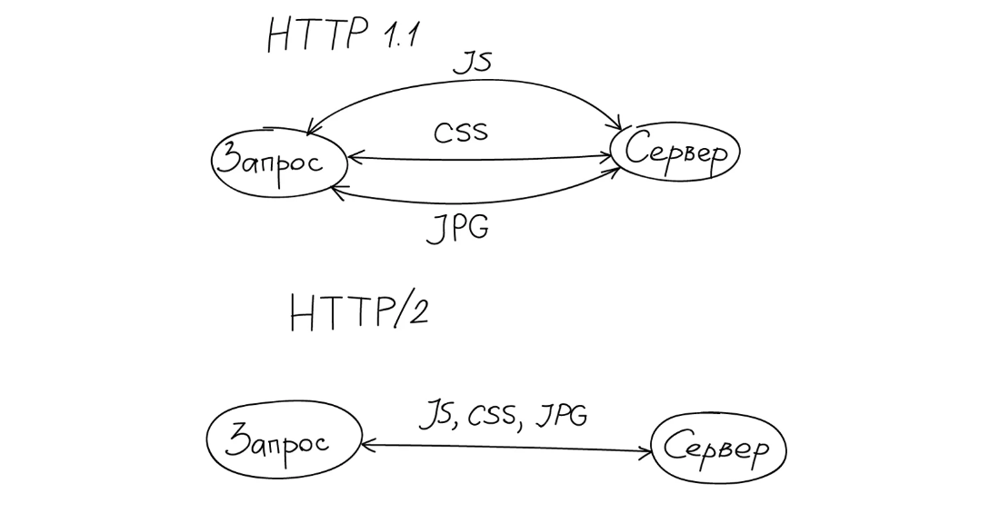
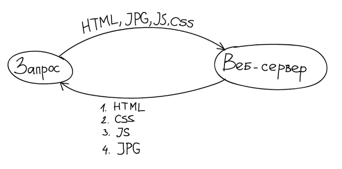

HTTP
- Hypertext Transfer Protocol
- Тим Бернерс-Ли, CERN, 1989
- протокол прикладного уровня
- 80 порт
- запрос-ответ
- stateless
- TCP, но можно и UDP (HTTPU)
HTTP - Версии
- HTTP V0.9, 1991
- Только GET
- Только HTML
HTTP - Версии
- HTTP V1.0, 1996
- Контент: изображения, видео, текст и другое
- + POST, HEAD
- коды состояния
- кэширование, авторизация, кодировки
HTTP - Версии
- HTTP V1.1, 1999
- + OPTIONS, PUT, DELETE, TRACE, CONNECT
- Connection: Keep-Alive
- возможность запрашивать сразу несколько файлов
HTTP - Методы
- GET
- POST
- PUT
- DELETE
- HEAD
- OPTIONS
HTTP - GET
- запрос данных ресурса
- никаких побочных эффектов
HTTP - HEAD
- тоже что и GET
- только без тела ответа
- одни заголовки
HTTP - POST
- запрос на создание ресурса на сервере
- данные передаются в теле запроса
HTTP - PUT
- запрос на обновление ресурса
- сервер может принимать решение о создании ресурса при отсутствии
HTTP - DELETE
- запрос на удаление ресурса
HTTP - OPTIONS
- запрос поддерживаемых методов для указанного URL
- CORS preflight
HTTP - Идемпотентность
- количество запросов не влияет на результат
- +: GET, HEAD, OPTIONS, PUT, DELETE
- -: POST
- зависит от реализации
HTTP - Методы

HTTP - Запрос
- строка запроса
- заголовки
- пустая строка
- тело
HTTP - Запрос
GET /index.html HTTP/1.1
User-Agent: Mozilla/4.0 (compatible; MSIE5.01; Windows NT)
Host: www.example.com
Accept-Encoding: gzip, deflate
Connection: Keep-Alive
HTTP - Ответ
- строка статуса
- заголовки
- пустая строка
- тело
HTTP - Ответ
HTTP/1.1 200 OK
Date: Mon, 23 May 2005 22:38:34 GMT
Content-Type: text/html; charset=UTF-8
Content-Encoding: UTF-8
Content-Length: 138
Last-Modified: Wed, 08 Jan 2003 23:11:55 GMT
Server: Apache/1.3.3.7 (Unix) (Red-Hat/Linux)
ETag: "3f80f-1b6-3e1cb03b"
Accept-Ranges: bytes
Connection: close
...
HTTP - Статусы
- 1хх - информационные
- 2хх - успешные
- 3хх - перенаправление
- 4хх - ошибка клиента
- 5хх - ошибка сервера
HTTP - 2хх
- 200 - OK
- 201 - Created
- 202 - Accepted
- 204 - No Content
HTTP - 3хх
- 301 - Moved permanently
- 302 - Moved Temporarily
- 304 - Not Modified
HTTP - 4хх
- 400 - Bad request
- 401 - Unauthorized
- 403 - Forbidden
- 404 - Not Found
- 405 - Method Not Allowed
- 409 - Conflict
HTTP - 5хх
- 500 - Internal Server Error
- 503 - Service Unavailable
- 504 - Gateway Timeout
HTTP - Кэширование

HTTP - Кэширование

Same origin policy
- скрипты одной вкладки могут получать доступ к другой вкладке и данным посещенных сайтов
- совпадение домена, порта и протокола
CORS
GET /cors.txt HTTP/1.1
Host: z.com
Origin: a.com
Access-Control-Allow-Origin:
http://a.com
http://b.com
http://c.com
Access-Control-Allow-Origin: *
Cross-origin resource sharing
- браузер к запросам на другой домен прикрепляет - Origin, Referer
- сервер может отказать в запросе
CORS - Simple Request
- без preflight
- если нарушены Allow заголовки ответ не будет доступен
- Методы - GET, HEAD, POST
- Заголовки - Accept, Accept-Language, Content-Language, Content-Type
- Тип - application/x-www-form-urlencoded, multipart/form-data, text/plain
CORS - Simple Request - Request
var invocation = new XMLHttpRequest();
var url = 'http://bar.other/resources/public-data/';
function callOtherDomain() {
if(invocation) {
invocation.open('GET', url, true);
invocation.onreadystatechange = handler;
invocation.send();
}
}
CORS

CORS - Simple Request - Request Body
GET /resources/public-data/ HTTP/1.1
Host: bar.other
User-Agent: XYZ
Accept: text/html,application/xml,...
Accept-Language: en-us,en
Accept-Encoding: gzip,deflate
Accept-Charset: utf-8
Connection: keep-alive
Referer: http://foo.example/examples/access-control/simpleXSInvocation.html
Origin: http://foo.example
CORS - Simple Request - Response body
HTTP/1.1 200 OK
Date: Mon, 01 Dec 2008 00:23:53 GMT
Server: Apache/2.0.61
Access-Control-Allow-Origin: *
Keep-Alive: timeout=2, max=100
Connection: Keep-Alive
Transfer-Encoding: chunked
Content-Type: application/xml
[XML Data]
CORS - Preflight Request
- делается preflight / OPTIONS
- браузер проверяет Allow заголовки
CORS - Preflight Request - Request
var invocation = new XMLHttpRequest();
var url = 'http://bar.other/resources/post-here/';
var body = '
Arun';
function callOtherDomain(){
if(invocation) {
invocation.open('POST', url, true);
invocation.setRequestHeader('Content-Type',
'application/xml');
invocation.onreadystatechange = handler;
invocation.send(body);
}
}
CORS - Preflight Request - Request Body
OPTIONS /resources/post-here/ HTTP/1.1
Host: bar.other
User-Agent: XYZ
Accept: text/html,application/xml
Accept-Language: en-us,en
Accept-Encoding: gzip,deflate
Accept-Charset: utf-8
Connection: keep-alive
Origin: http://foo.example
Access-Control-Request-Method: POST
Access-Control-Request-Headers: Content-Type
CORS - Preflight Request - Response body
HTTP/1.1 200 OK
Date: Mon, 01 Dec 2008 01:15:39 GMT
Server: Apache/2.0.61 (Unix)
Access-Control-Allow-Origin: http://foo.example
Access-Control-Allow-Methods: POST, GET, OPTIONS
Access-Control-Allow-Headers: X-PINGOTHER, Content-Type
Access-Control-Max-Age: 86400
Vary: Accept-Encoding, Origin
Content-Encoding: gzip
Content-Length: 0
Keep-Alive: timeout=2, max=100
Connection: Keep-Alive
Content-Type: text/plain
CORS - Allow Headers
- Access-Control-Allow-Origin - разрешенные домены
- Access-Control-Expose-Headers - разрешенные для чтения заголовки
- Access-Control-Max-Age - насколько можно закэшировать preflight
CORS - Allow Headers
- Access-Control-Allow-Headers - разрешенные заголовки
- Access-Control-Allow-Methods - разрешенные методы
Content Security Policy
- отдаётся заголовок вместе с html страницей
- разрешает загрузку определенных ресурсов с определенных доменов
- default-src, script-src, object-src, style-src, img-src, media-src, frame-src, font-src, connect-src, report-uri
CSP - Example
Content-Security-Policy:
default-src 'self';
style-src 'self' http://cdn.example.com;
script-src http://cdn.example.com;
HTTPS
- HyperText Transfer Protocol Secure
- HTTP через TLS
- 443 порт
HTTP/2 - Цели
- механизм обсуждения протокола для клиента и сервера
- высокий уровень совместимости с HTTP 1.1
- уменьшение сетевой задержки
- поддержка браузеров, мобильных приложений, веб-серверов и т.д.
HTTP/2 - Цели
- является потомком SPDY от Google
- встроенная безопасность
- 83.23% браузерной поддержки
HTTP/2 - Бинарность
- вместо текста
- компактность
- легче парсить
- меньше ошибок
HTTP/2 - Мультиплексирование

HTTP/2 - Приоритизация

HTTP/2 - Компрессия заголовков
- HPACK / формат сжатия
- заголовки отправляются один раз
- затем отправляются только изменившиеся заголовки
HTTP/2 - Server push